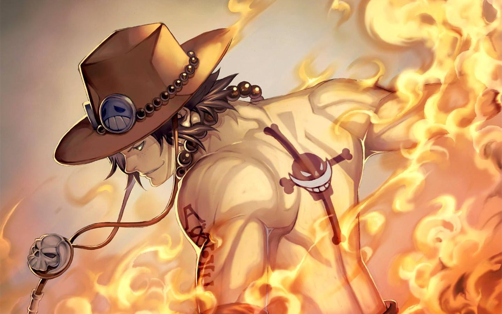

HOME 灵能100/100
抓捕菲姬子计划启动
龙套
龙套的师傅
小酒窝
像他的作品，一部部读完，才能一步步走近那个真实的、完整的王小波。让你慢慢思考，然后忽然明白。
刘心武曾在王小波逝世前一个星期给他打电话，问他晚上要不要出来喝酒。小波说自己头痛，去不成。他没有太在意，
嘱咐了两句注意身体后就挂断了。后来刘心武回忆起小波的面容，始终觉得欠他一杯酒。作家胡弃暗曾称“鲁迅是父执，小波是兄长。”
可有一种遗憾是，当我们想与这位大哥亲切地对坐畅饮，不醉不归时，他已经一别经年永不回头了。
.jpeg "fffff")
点击出现pdf，呱呱呱
百度地图API自定义地图
